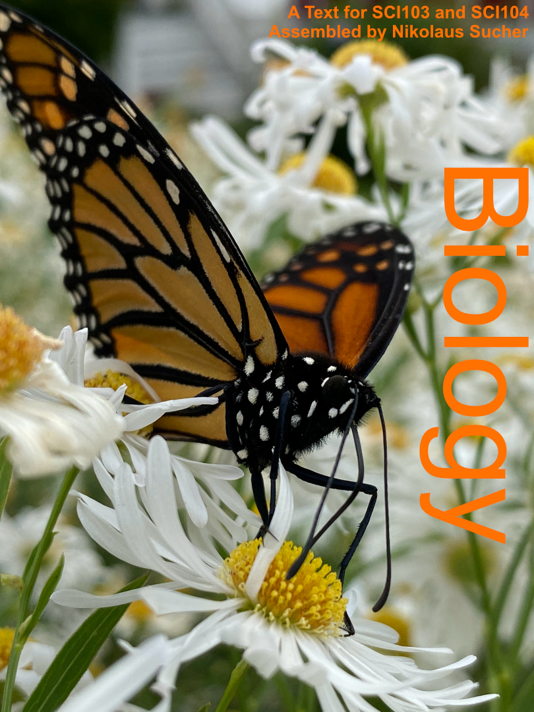

Text For Biology at Roxbury Community College
Welcome
This Is A Text For The Introductory Biology Courses Biology I (SCI103) And Biology II (SCI104) at Roxbury Community College (RCC).

This work is licensed under the Creative Commons Attribution-Share Alike 3.0 Unported United States License.